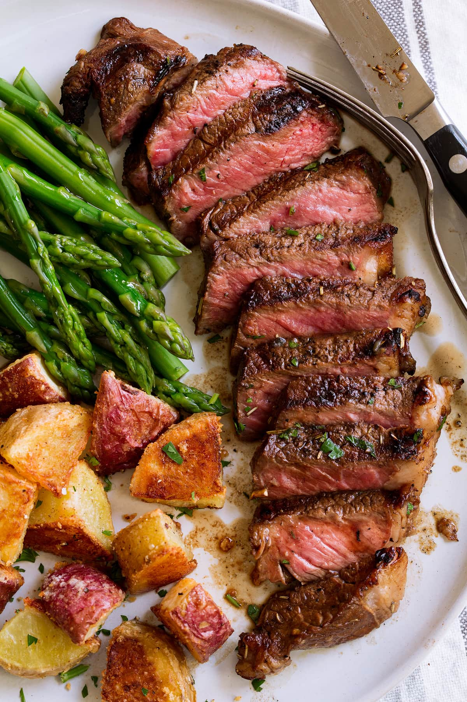

Steak Marinade

This is a family recipe that has been developed only over the last 5 years. In this short time it's made me famous in our close circle, but until now I've never shared it with anyone.
Ingredients
- Soy sauce
- Olive oil
- Lemon juice
- Worcestershire sauce
- Minced garlic
Steps
- Place everything in a blender. Blend on high speed for 30 seconds until thoroughly mixed.
- Pour marinade over desired type of meat. Cover, and refrigerate for up to 8 hours. Cook meat as desired.